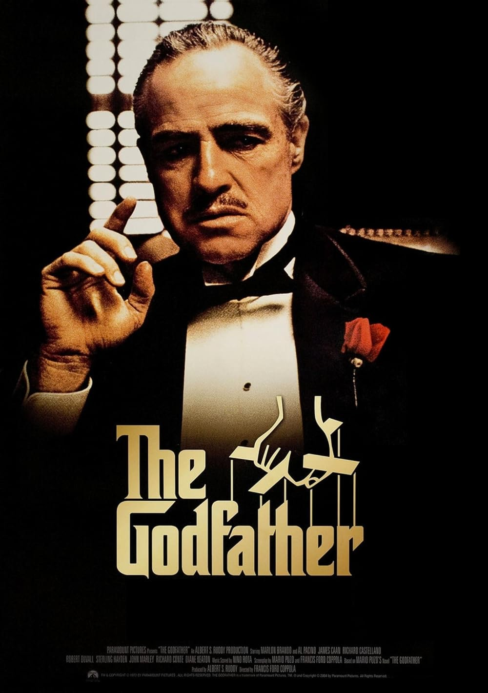

The Godfather
Septiembre 1972
Suspenso
4.9
2h 55m
Don Vito Corleone es el respetado y temido jefe de una de las cinco familias de la mafia de Nueva York en los años 40. El hombre tiene cuatro hijos: Connie, Sonny, Fredo y Michael, que no quiere saber nada de los negocios sucios de su padre. Cuando otro capo, Sollozzo, intenta asesinar a Corleone, empieza una cruenta lucha entre los distintos clanes.